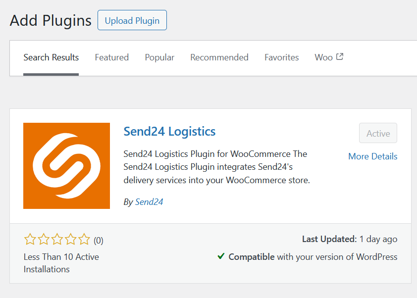

Installation
Install WooCommerce main plugin from the WordPress plugin store
Send24 Logistics in the Plugin Store

Install the Send24 plugin from the WordPress plugin store
Activate the plugin through the Plugins menu in WordPress.
Go to WooCommerce > Settings > Shipping > Send24 Logistics to configure your API keys and other settings.
Last modified: 19 March 2025